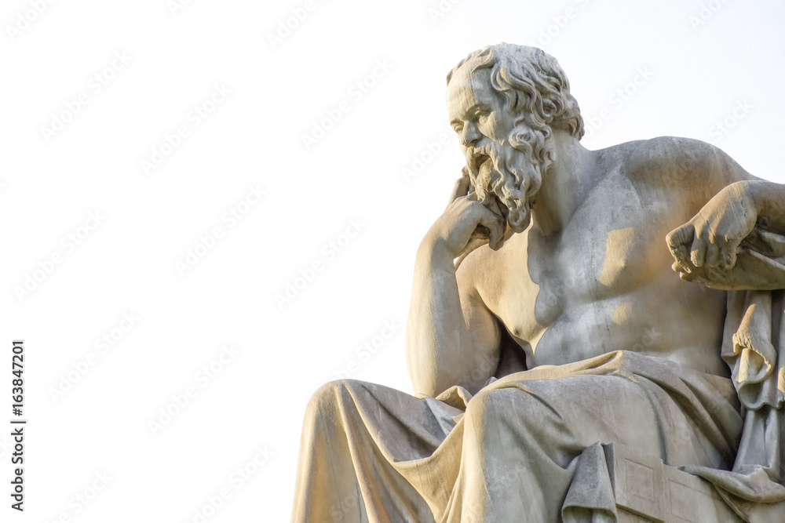

Welcome to Greek Philosophy
Explore the wisdom of ancient Greek philosophers and their timeless teachings. Greek philosophy has shaped the foundation of Western thought, influencing science, ethics, politics, and art.

What is Greek Philosophy?
Greek philosophy refers to the philosophical ideas and teachings that originated in ancient Greece. It is characterized by a focus on reason, inquiry, and the pursuit of knowledge about the universe, human nature, and morality.
Key Concepts in Greek Philosophy

Why Study Greek Philosophy?
Studying Greek philosophy helps us understand the origins of many modern ideas and provides insights into timeless questions about life, existence, and morality. It encourages critical thinking and a deeper appreciation of human thought.
